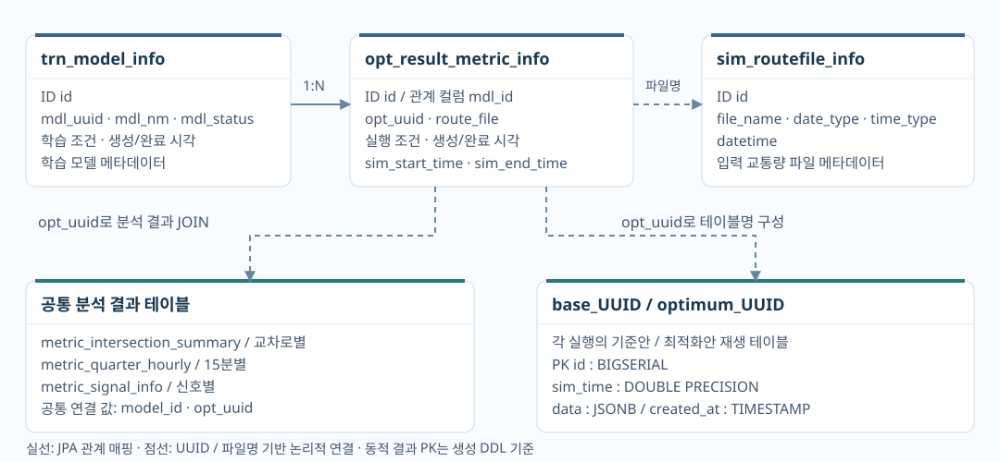

교차로 정보는 한 곳에서 관리
도로축과 교차로 사이에 연결 테이블을 뒀습니다. 여러 도로축에 속한 교차로도 정보는 한 번만 저장합니다. 교차로 정보가 바뀌면 해당 행을 수정하고, 소속 도로축이 바뀌면 연결 테이블을 수정합니다.
DATA MODELING · INTEGRITY · OPERATIONS
교통신호 시뮬레이션 결과를 비교하는 시스템과, 실시간 차량 데이터로 교통 지표를 계산하는 시스템의 DB를 설계했습니다. 각 시스템에서 어떤 데이터를 저장해야 했고, 왜 테이블을 나눴으며, 장애와 용량 증가에 어떻게 대응했는지 정리했습니다.
TWO DESIGN CASES
신호 시간을 바꿨을 때 교통 흐름이 나아지는지 시뮬레이션으로 비교하는 시스템입니다. 교차로와 신호 설정을 관리하고, 실행마다 생성되는 차량 위치와 분석 결과를 찾아볼 수 있도록 설계했습니다.
CASE 02 / 실시간 데이터 수집교차로에서 수집한 차량 데이터로 위험 상황과 탄소 배출 등의 지표를 계산하는 시스템입니다. 수신이 끊긴 시간을 구분해 기록하고, 서버 재시작 후 계산을 이어갈 수 있도록 저장 구조를 설계했습니다.
각 절의 첫 문단에 문제와 해결 방법을 요약하고, 아래에 테이블 구조와 구현 내용을 담았습니다. 구현 설명은 엔티티·SQL·저장 및 조회 코드를 기준으로 작성했으며, 미적용 사항은 ‘개선안’으로 표시했습니다.
교통신호 시스템 · 교차로와 신호 설정
이 시스템은 기존 신호 설정과 최적화한 설정의 교통 흐름을 시뮬레이션으로 비교합니다. 이를 위해 도로축(여러 교차로를 묶은 도로 구간)을 선택하면 해당 교차로와 시간대별 신호 설정을 불러올 수 있어야 했습니다. 하나의 교차로가 여러 도로축에 포함될 수 있어, 교차로 정보와 소속 관계를 따로 저장했습니다.

도로축과 교차로 사이에 연결 테이블을 뒀습니다. 여러 도로축에 속한 교차로도 정보는 한 번만 저장합니다. 교차로 정보가 바뀌면 해당 행을 수정하고, 소속 도로축이 바뀌면 연결 테이블을 수정합니다.
교차로의 id는 DB 안에서 테이블을 연결할 때, node_id는 시뮬레이터의 교차로와 연결할 때 사용했습니다. 신호의 기본 설정과 시간대별 운영 계획도 나눴습니다. 다만 두 테이블에 겹쳐 있는 운영 항목은 어느 쪽을 기준으로 삼을지 추가 정리가 필요합니다.
신호 그룹을 Ring, 신호가 켜지는 단계를 현시(Phase)라고 합니다. A·B 그룹 모두 1번 현시를 가질 수 있어 번호만으로 조회하면 다른 신호의 시간을 가져올 수 있습니다. 교차로와 시간대를 선택한 뒤 그룹과 번호를 함께 사용해 A-1과 B-1을 구분했습니다. 이는 애플리케이션의 조회 규칙이며, DB의 중복 방지 제약과는 별개입니다.
교통신호 시스템 · 시뮬레이션 결과
같은 학습 모델도 교통량이나 시간대를 바꾸면 결과가 달라집니다. 모델 하나에 여러 실행 이력을 연결하고, 각 실행의 차량 위치와 분석 지표를 따로 저장했습니다. 실행 ID와 작업 식별자(UUID)로 결과를 찾아 기존 신호와 최적화한 신호의 차량 흐름을 비교합니다.

모델 ID, 교통량 파일,
요일·시간대 선택
실행 행 저장 후 Python 요청
응답의 작업 UUID 갱신
차량 위치 파일 → DB 일괄 저장
분석 지표 → 공통 테이블
동일 시점 비교 재생
분석 API·Excel 보고서
| 구분 | 저장 방식 | 이유와 한계 |
|---|---|---|
| 차량 재생 | 실행별 테이블sim_time + JSONB | 화면 재생에는 같은 시점의 차량 위치를 한꺼번에 읽어야 해서 JSONB로 묶었습니다. 특정 차량의 이동 경로를 찾는 용도에는 별도 구조나 인덱스가 필요합니다. |
| 비교 분석 | 교차로·15분·신호별 공통 분석 테이블 | 보고서는 미리 계산한 지표를 컬럼에서 읽습니다. 차량 위치 JSON을 다시 분석할 필요는 없지만, 두 결과가 같은 실행에서 나온 것인지 관리해야 합니다. |
서버 간 실패 처리 Java의 실행 등록과 Python의 결과 저장은 따로 처리됩니다. 따라서 실행 이력이 있어도 결과 저장은 실패할 수 있습니다. Java의 @Transactional만으로 두 서버의 작업을 함께 저장하거나 취소할 수는 없습니다.
교통신호 시스템 · 한계와 개선안
현재 구조로 실행 이력을 조회하고 기존 신호와 최적화한 신호의 결과를 비교할 수 있습니다. 다만 실행할 때마다 결과 테이블이 늘고, 서버 간 작업이 실패했을 때 상태를 추적하기 어렵습니다. 아래는 현재 구조를 선택한 이유와 추가로 보완할 부분입니다.
| 판단 항목 | 현재 구조 | 다른 방식이 필요한 경우 |
|---|---|---|
| 도로축 소속 | 교차로와 연결 테이블로 분리 기준 정보의 중복을 줄이는 대신 조인이 필요 | 도로축 행에 교차로 목록을 넣으면 단순하지만 개별 교차로의 속성·관계 관리가 어려워짐 |
| 재생 데이터 | 시점별 차량 상태를 JSONB로 저장 프레임 조회에 맞고 차량별 분석은 불리 | 차량·시점별 행으로 분리 차량 궤적이나 속성 검색이 주요 요구가 될 때 검토 |
| 실행별 결과 | base_UUID / optimum_UUID테이블 단위 정리가 가능하지만 실행마다 테이블 증가 | 공통 테이블의 run_id, variant, sim_time실행 수 증가 시 조회·삭제 비용과 관리 부담을 비교 |
| 현재 코드에서 확인한 한계 | 보완 방법 |
|---|---|
| 같은 신호 설정의 중복 Ring-Phase가 중복되면 먼저 읽은 값을 사용 | 기존 중복을 점검하고 교차로·시간대·Ring·Phase의 유일성 규칙을 정의합니다. 계획 버전 도입 시 버전도 키에 포함합니다. |
| 교차로 연결 기준 일부 분석은 이름, 일부는 node_id로 조인 | 외부 교차로 ID의 매핑 기준을 통일하고 미매핑·중복 매핑 건수를 확인합니다. 이름은 표시 용도로 분리합니다. |
| 조회 경로와 인덱스 코드의 결과 생성 DDL에 조회용 인덱스 미정의 | 운영 인덱스와 실행 계획을 확인합니다. 재생의 sim_time, 분석의 opt_uuid와 정렬 컬럼을 후보로 읽기·쓰기 비용을 비교합니다. |
| 외부 요청·삭제 실패 비동기 실패는 로그 중심, 삭제는 서버 간 별도 처리 | 요청·실행·실패·삭제 상태와 재시도 키를 영속화하고, 단계별 완료 여부를 확인해 남은 작업을 재처리합니다. 동적 식별자는 UUID 형식도 검증합니다. |
현재는 모델과 실행 이력이 남아 있어도, 이후 신호 설정이 바뀌면 과거 실행의 입력을 그대로 복원하기 어렵습니다. 신호 계획의 버전과 적용 기간을 실행 이력에 연결하고, 시간대 코드와 지표 단위도 명확히 기록하겠습니다.
실행별 결과를 공통 테이블에 모으는 방안과 실패한 작업을 재처리하는 구조도 검토하겠습니다. 인덱스나 테이블 구조 변경은 운영 DB의 정의와 쿼리 실행 계획을 확인하고, 실제 데이터로 측정한 뒤 결정하겠습니다.
V2X 수집 시스템 · 수집 데이터 구조
이 시스템은 교차로의 차량 관측 데이터로 위험 상황과 탄소 배출 등의 지표를 계산합니다. 수신이 끊겼는데 위험 건수를 0으로 저장하면 정상적으로 관측한 시간과 구분할 수 없습니다. 그래서 지표마다 수신 상태를 기록하고, 여러 초에 걸쳐 이어지는 위험 상황은 하나의 사건으로 관리했습니다.

| 데이터 | 저장·갱신 기준 | 분리한 이유 |
|---|---|---|
| 관측 지표 | 교차로 × 1초(sector_id, bucket_start_ms) | 교차로와 시각을 묶어 같은 1초 구간의 중복 저장을 막습니다. 수신 상태(quality)와 관측된 시간(coverage_ms)도 함께 기록합니다. |
| 위험 사건 | 사건 × 확정 시각(event_id, confirmed_ms) | 초마다 새 사건으로 세지 않도록 분리했습니다. 마지막 감지·종료 시각·위험도는 같은 사건 행에 갱신합니다. |
| 복구 상태 | 교차로별 최신 1행sector_id | 서버가 다시 시작할 때 이어서 계산할 위치와 상태를 저장합니다. 이 정보를 체크포인트라고 하며, 오래된 관측 이력을 삭제할 때도 남겨 둡니다. |
컬럼과 JSON의 역할 보고서에서 조회하는 집계값은 컬럼으로, 상세 결과와 재시작에 필요한 상태는 JSON 문자열로 저장했습니다. payload_json·state_json의 DB 타입은 TEXT입니다. 컬럼과 JSON에 함께 담긴 값이 일치하도록 저장 코드에서 처리합니다.
V2X 수집 시스템 · 저장과 재시작
계산 결과는 저장되지 않았는데 체크포인트만 다음 구간으로 넘어가면, 재시작 후 해당 구간을 건너뛰게 됩니다. 이를 막기 위해 같은 구간의 지표·사건·공간 데이터와 체크포인트를 하나의 트랜잭션으로 묶었습니다. 모두 저장되거나 모두 취소되도록 처리했습니다.
타임스탬프 검사
중복·지연 입력 구분
안전·탄소 계산 후 결합
기본 지연 허용 0.5초
한 구간을 함께 COMMIT
성공 후 다음 구간 진행
기간별 지표 보고서
15분 단위 공간 집계

| 품질·실패 상황 | 현재 구현의 처리 규칙 |
|---|---|
| 관측 부족·수신 공백 | 1초 중 관측된 시간이 0이면 missing(수신 없음), 950ms 이상이고 검증에서 제외된 객체가 없으면 complete(충분), 나머지는 partial(일부 수신)로 기록합니다. 위험이 감지되지 않았어도 데이터가 부족하면 InsufficientData(판단 근거 부족)로 구분합니다. |
| 중복·늦게 도착한 프레임 | 같은 타임스탬프의 중복 입력과 이미 확정한 구간보다 오래된 입력을 제외하고 누적 건수를 기록합니다. 확정된 과거 지표를 늦은 입력으로 덮어쓰지 않습니다. |
| 같은 저장 요청의 재시도 | 이미 저장된 최신 체크포인트와 계산 상태·지표·사건 내용이 모두 같으면 성공으로 처리합니다. 오래된 요청이나 내용이 다른 요청은 거부합니다. 재시도 가능한 DB 오류는 최대 3회 시도합니다. |
저장이 끝날 때까지 기다리므로 계산 상태와 DB의 처리 순서를 맞출 수 있습니다. 대신 저장 속도가 전체 처리량을 제한합니다. 병렬 처리로 확장하려면 교차로별 저장 담당과 체크포인트 관리 범위를 나눠야 합니다.
체크포인트에는 설정·프레임·사건 계산 상태가 들어갑니다. 수신 큐에만 있던 입력은 복구되지 않으므로, 필요 시 보관한 원본 로그를 별도 DB에 재생합니다.
V2X 수집 시스템 · 용량 관리와 검증
SQLite에서 PostgreSQL로 전환하면서 계속 늘어나는 이력을 정리할 방법이 필요했습니다. 이력 테이블을 1시간 단위 파티션으로 나눠 오래된 시간대부터 삭제하도록 했습니다. 진행 중인 사건과 재시작에 필요한 데이터는 삭제 대상에서 제외했습니다.
10진 GB · DB 전체 용량을 60초마다 확인 · 한 번의 정리 작업은 약 20초 이내
| 운영 요구 | 구현 방법 | 효과와 제약 |
|---|---|---|
| 교차로·기간 조회 | 지표 PK (sector_id, bucket_start_ms)사건 인덱스 (sector_id, confirmed_ms) | 특정 교차로를 선택한 뒤 기간을 좁혀 조회하는 방식에 맞췄습니다. 실제 성능은 데이터량과 쿼리 실행 계획을 확인해 판단해야 합니다. |
| 오래된 이력 정리 | 이력 5개 테이블을 UTC 1시간 단위 RANGE 파티션으로 구성 | 행별 삭제 대신 같은 시간대의 파티션 5개를 함께 삭제합니다. 사건 PK에도 파티션 기준인 확정 시각을 포함했습니다. |
| 저장·삭제 충돌 방지 | 공통 트랜잭션 잠금 삭제 구간을 관리 테이블에 기록 | 진행 중 사건·최신 체크포인트 구간·최신 파티션·현재 이후 구간을 보호합니다. 정리된 시간대는 다시 만들지 않습니다. |
보존 범위 체크포인트는 삭제하지 않습니다. 70GB는 운영 목표이며 보호 중인 데이터 등에 따라 초과할 수 있습니다. WAL·원본 로그·영상은 이 용량 기준에 포함되지 않고, 삭제 전 자동 백업은 없습니다.
7,500초 입력 → 34.25초 처리
합성 데이터 7,500초 분량으로 지표 7,500행을 저장한 기록입니다. 프로세스 메모리(RSS)는 38.3~38.82MB, DB 연결은 최대 2개였습니다. 실제 운영 환경의 처리 성능이나 DB 전환 전후의 개선율을 측정한 결과는 아닙니다.
기존 테스트 코드의 항목을 정리했습니다. 이 문서를 작성하며 다시 실행한 결과는 아닙니다.
현재 메모리 큐에만 남은 입력은 장애 시 잃을 수 있습니다. 원본 데이터를 별도로 보관하고 어디까지 처리했는지 기록해 복구할 수 있도록 보완하겠습니다. 이력 삭제 전 별도 보관 여부와 보관 기간도 정해야 합니다. 또한 읽기 전용 세션 설정에 더해 조회·저장·테이블 변경용 DB 계정의 권한을 분리하겠습니다.